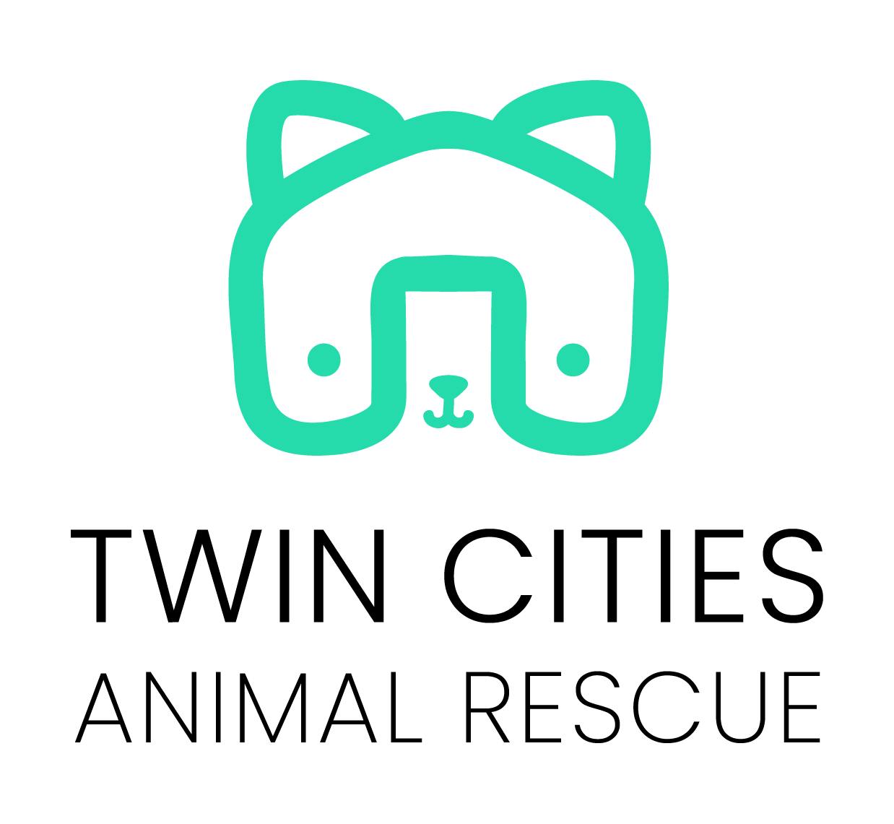

Our Mission
Our mission is to rescue, care for, and connect animals with loving families while encouraging responsible pet ownership and community involvement.

Our Values
We believe every animal deserves compassion, safety, proper care, and the opportunity to find a loving family and home.

Our Story
Twin Cities Animal Rescue was created with the core purpose of finding animals safe and loving homes they can be a part of forever. We work with families, volunteers, and community partners to provide care and support for animals throughout the Twin Cities area.